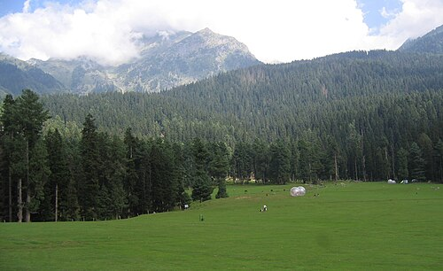

DEFENCE NEWS
Terrorism: A Concern to nation
The 2025 Pahalgam attack was a terrorist attack on tourists by at least three armed terrorists near Pahalgam in India's Jammu and Kashmir in which 26 civilians were killed on 22 April 2025. The militants targeted Hindu tourists, though a Christian tourist and a local Muslim were also killed. The attackers, armed with M4 carbines and AK-47s, entered the Baisaran Valley, a famous tourist spot, through the surrounding forests. This incident is considered the deadliest attack on civilians in India since the 2008 Mumbai attacks.

The Resistance Front (TRF), a proxy of the Pakistan-based Islamist UN-designated terrorist group Lashkar-e-Taiba (LeT),initially claimed responsibility for the attack twice, on both the day of the attack and the next day. TRF released a statement that the attack was in opposition to non-local settlement in the region resulting from the abolition of the special status of Kashmir. After a few days, TRF denied its involvement in the attack. Previously, TRF has claimed responsibility for several attacks in Indian-administered Kashmir targeting religious minorities.

The militants singled out the men and asked for their religion before shooting the Hindu and Christian tourists. The attackers also asked some tourists to recite the Islamic kalima, a Muslim declaration of faith, to identify non-Muslims. Of the 26 people killed, 25 were tourists, and one was a local Muslim pony ride operator who tried to wrestle a gun from the attackers. The tourists included several newlywed couples, and the men were shot point-blank in front of their wives.
In retaliation Indian forces launched OPERATION MAHADEV to identify and neutralize the terrorists. On 28 July 2025 three perpetrators were killed.
JUSTICS FOR MARTYRS
To read and watch more on this attack,click here
INTERNATIONAL NEWS
Trump warns Hamas 'we will have no choice but to go in and kill them' if bloodshed persists in Gaza
President Donald Trump on Thursday (October 16, 2025) warned Hamas “we will have no choice but to go in and kill them” if internal bloodshed persists in Gaza.The grim warning from Mr. Trump came after he previously downplayed the internal violence in the territory since a ceasefire and hostage deal between Israel and Hamas went into effect last week in the two-year war.

CLICK HERE TO WATCH WATCH WHAT TRUMP SAID!!
POLITICAL NEWS
Bihar Election 2025 Live: Nitish Kumar, Prashant Kishor are star campaigners of JDU and Jan Suraaj Party
Bihar Election 2025 Live: As the deadlock among the Bihar Mahagathbandhan partners over seat-sharing continues, Congress MP Akhilesh Singh on Friday spilt the beans on Friday, saying RJD leader Tejashwi Yadav is the chief ministerial face of the grand alliance. Though, an official announcement to this effect has not been made yet. Also, Vikassheel Insaan Party (VIP) chief Mukesh Sahani has chosen not to contest the upcoming polls, while it was speculated that he might contest the election in partnership with the Mahagathbandhan. Meanwhile, Congress released its first list of 48 candidates for Bihar elections on Thursday night. Amit Shah and BJP Chief Ministers to hit the campaign trail soon. Stay tuned for latest updates.

Click to watch more detailed news on bihar elections